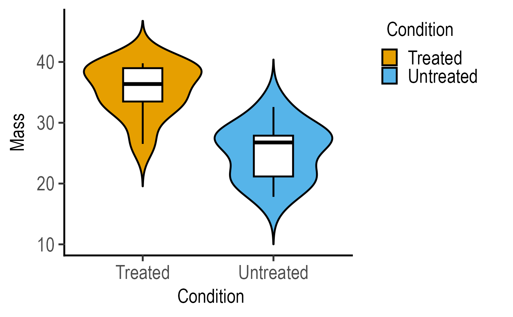
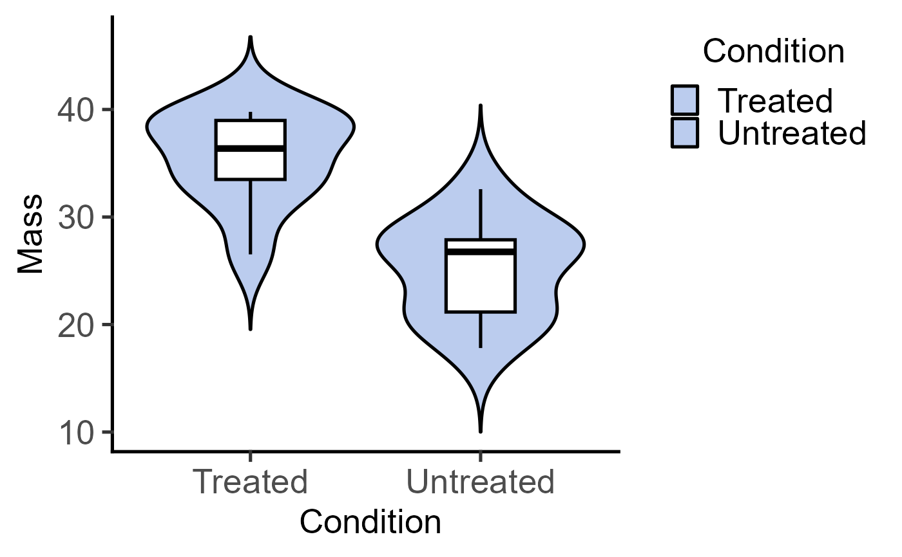
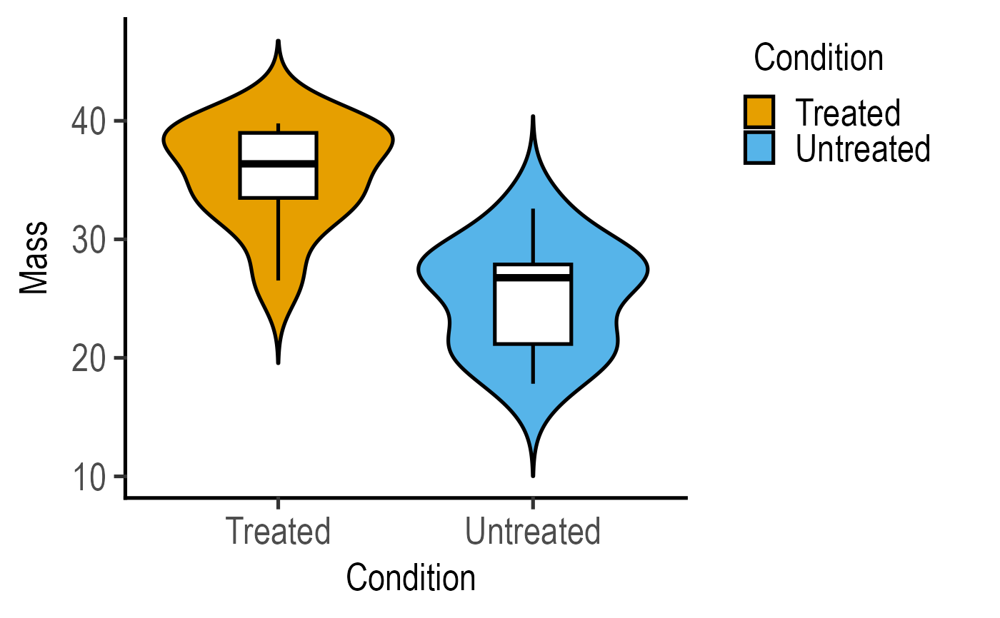
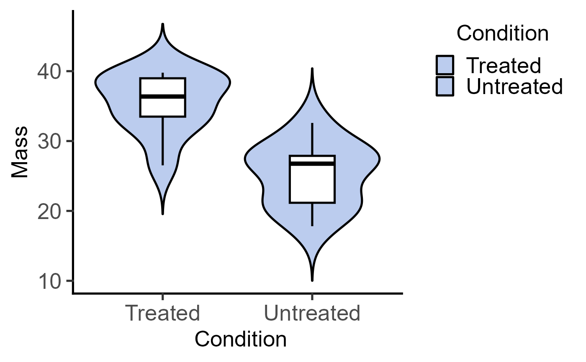

Plot a scatter plot on a violin plot with two variables.
Source:R/plot_scatterviolin.R
plot_scatterviolin.RdThis function takes a data table, X and Y variables, and plots a graph with a scatter plot and violinplot using ggplot.
plot_scatterviolin(
data,
xcol,
ycol,
symsize = 2.5,
symthick = 1,
bwid = 0.1,
bvthick = 1,
b_alpha = 1,
s_alpha = 1,
v_alpha = 1,
ColPal = "all_grafify",
ColSeq = TRUE,
ColRev = FALSE,
jitter = 0,
trim = TRUE,
scale = "width",
TextXAngle = 0,
fontsize = 20,
...
)Arguments
- data
a data table object, e.g. data.frame or tibble
- xcol
name of the column to plot on X axis. This should be a categorical variable.
- ycol
name of the column to plot on quantitative Y axis. This should be a quantitative variable.
- symsize
size of dots relative to
binwidthused bygeom_point. Default set to 2.5, increase/decrease as needed.- symthick
thickness of dot border (
strokeparameter ofgeom_point), default set to 1- bwid
width of boxplots; default 0.2
- bvthick
thickeness of both violin and boxplot lines; defalut 1
- b_alpha
fractional opacity of boxplots, default set to 1 (i.e. maximum opacity & zero transparency). For white boxplots inside violins, set
b_alpha = 0.- s_alpha
fractional opacity of symbols, default set to 1 (i.e. maximum opacity & zero transparency). Set
s_alpha = 0to not show scatter plot.- v_alpha
fractional opacity of violins, default set to 1 (i.e. maximum opacity & zero transparency)
- ColPal
grafify colour palette to apply, default "all_grafify"; alternatives: "okabe_ito", "bright", "pale", "vibrant", "contrast", "muted" "dark", "light".
- ColSeq
logical TRUE or FALSE. Default TRUE for sequential colours from chosen palette. Set to FALSE for distant colours, which will be applied using
scale_fill_grafify2.- ColRev
whether to reverse order of colour choice, default F (FALSE); can be set to T (TRUE)
- jitter
extent of jitter (scatter) of symbols, default is 0 (i.e. aligned symbols). To reduce symbol overlap, try 0.1-0.3 or higher.
- trim
set whether tips of violin plot should be trimmed at high/low data. Default
trim = T, can be changed to F.- scale
set to "area" by default, can be changed to "count" or "width".
- TextXAngle
orientation of text on X-axis; default 0 degrees. Change to 45 or 90 to remove overlapping text
- fontsize
parameter of
base_sizeof fonts intheme_classic, default set to size 20.- ...
any additional arguments to pass to
ggplot2geom_boxplot,ggplot2geom_point orggplot2geom_violin.
Value
This function returns a ggplot2 object on which additional geometries etc. can be added.
Details
The function uses geom_violin, geom_boxplot and geom_point geometries.
Note that the geom_violin options are set as follows: scale = "width". The trim = T set by default can be changed when calling the function.
The boxplot shows IQR and the median is marked with a thicker horizontal line, and whisker depicts 1.5*IQR.
The X variable is mapped to the fill aesthetic in both violin and symbols, and its colour can be changed using ColPal option.
Colours can be changed using ColPal, ColRev or ColSeq arguments. Colours available can be seen quickly with plot_grafify_palette.
ColPal can be one of the following: "okabe_ito", "dark", "light", "bright", "pale", "vibrant, "muted" or "contrast".
ColRev (logical TRUE/FALSE) decides whether colours are chosen from first-to-last or last-to-first from within the chosen palette.
ColSeq (logical TRUE/FALSE) decides whether colours are picked by respecting the order in the palette or the most distant ones using colorRampPalette.
The size of symbols can be adjusted using symsize set to 1 by default.
Transparency of violins and symbols can be set independently with v_alpha and s_alpha, respectively.
Three types of plots are available for scatter/jitter symbols and either bars+SD, boxplot or violin plots: plot_scatterbar_sd, plot_scatterbox and plot_scatterviolin.
These are related to the three "dot" versions that use a different geometry for symbols: plot_dotbox, plot_dotbar_sd and plot_dotviolin.
Examples
#plot without jitter
plot_scatterviolin(data = data_t_pdiff,
xcol = Condition, ycol = Mass,
symsize = 2, trim = FALSE)
 #with jitter
plot_scatterviolin(data = data_t_pdiff,
xcol = Condition, ycol = Mass,
symsize = 2, trim = FALSE, jitter = 0.1)

#white boxplot and no symbols
plot_scatterviolin(data = data_t_pdiff,
xcol = Condition, ycol = Mass,
b_alpha = 0, s_alpha = 0,
symsize = 2, trim = FALSE, jitter = 0.1)

#with jitter
plot_scatterviolin(data = data_t_pdiff,
xcol = Condition, ycol = Mass,
symsize = 2, trim = FALSE, jitter = 0.1)

#white boxplot and no symbols
plot_scatterviolin(data = data_t_pdiff,
xcol = Condition, ycol = Mass,
b_alpha = 0, s_alpha = 0,
symsize = 2, trim = FALSE, jitter = 0.1)
